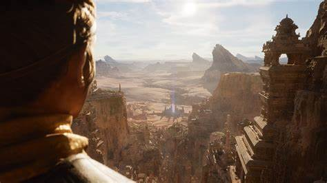
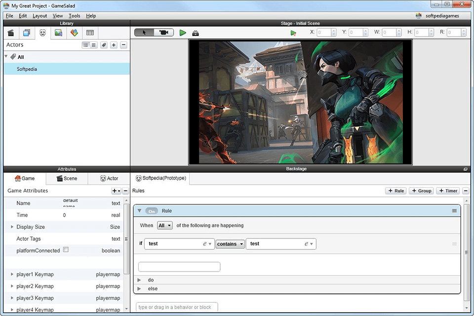
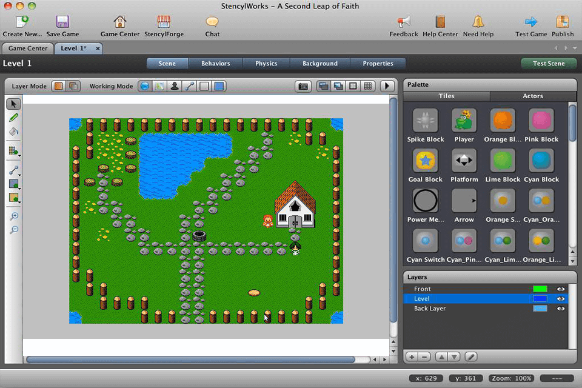
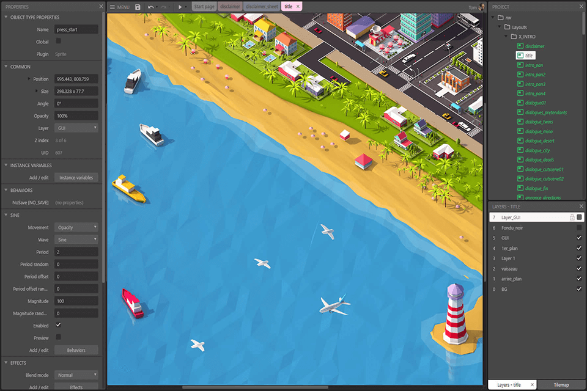
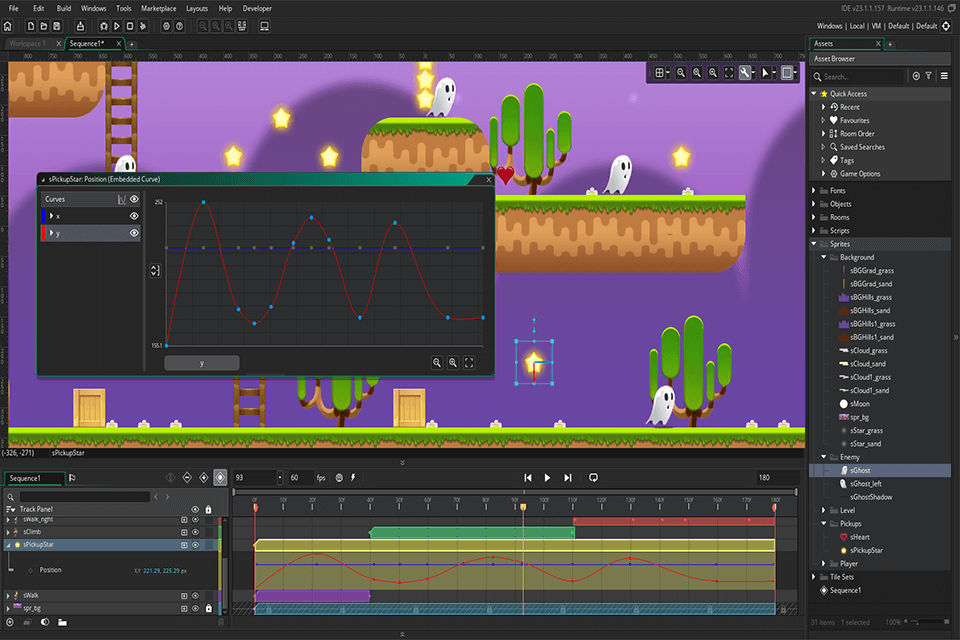

In recent years, videogame developement has opened up massively to those who can't afford to spend money on game developing software. There are many free softwares that can give the results of a high class videogame. These are some of the highest rated, free, game dev softwares.
1) Unreal Engine: You might know this software from popular videogames like Borderlands 2 and Gears of War 3. This Game software is a great way to start in game developement. It is free so all you need to make a cool game is time and a big imagination. Unreal is also supported by a vast selection of user created models and presets that makes the community very successful.
2) GameSalad: GameSalas is a much lesser known but still popular game development software. It is a free games development software, which runs under iOS and Android platforms. This software was used to create games that focus on learning programming languages. One of the major disadvantages is that it does not run under Windows.
3) Stencyl: : Stencyl is a free game dev software suitable for newcomers. You can create 2D games for both mobile devices and tablets, or create online games. It’s pretty similar to free video editing software for gaming since users can create clear workflows that will help speed up the creation of a game. Since this software supports multiple platforms, you can publish your games on Android, iOS, Windows, macOS and Linux platforms.
4) Construct 3: Construct 3 is a free game creator software that allows you to use either a graphical or drag-and-drop interface. This software supports many platforms and formats, so you can create a game that supports HTML5, Android, iOS, Windows, Mac, Linux, Xbox One, Microsoft Store, etc.
5) GameMaker Studio 2: GameMaker Studio 2 is a free games development software that will help you create a complete game using a graphical interface. GameMaker Studio 2 comes with a C-like scripting Game Maker Language, which offers great options to users.